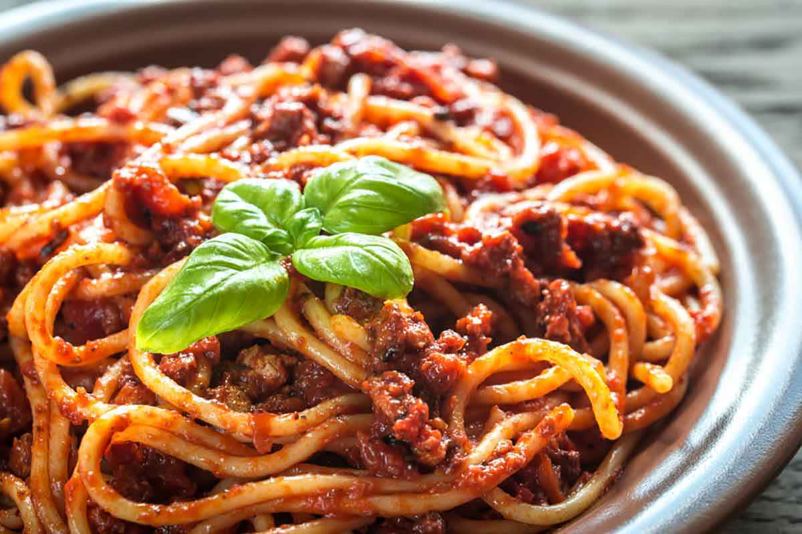

Ragù alla bolognese
Ingredienti
- 300 g Passata di pomodoro
- 70 g di carote
- 100 g di cipolle dorate
- 20 g di olio extravergine di oliva
- Carne bovina (trita di manzo, macinata grossa e mista) 300 g
- 100 g di vino rosso secco
- 50 g di Sedano
- 10 g di sale
- 1 pizzico di pepe nero macinato
- 150 g di Pancetta
Preparazione
- Iniziate a preparare il ragù alla bolognese dal soffritto. Tritate finemente al coltello il sedano, la carota e la cipolla. Scaldate l’olio e il burro in una casseruola dal fondo pesante, aggiungete le verdure e fatele appassire lentamente a fiamma bassa.
- Aggiungete la pancetta e, dopo un paio di minuti, la carne macinata. Rosolate a fiamma alta mescolando continuamente e sgranando con un cucchiaio.
- In una casseruola già calda versate un giro d'olio e aggiungete la pancetta di maiale.
- Sfumate con il vino bianco e lasciate evaporare. Quando non si sentirà più l'odore dell'alcool, aggiungete il latte e lasciate assorbire a fiamma media sempre mescolando di tanto in tanto. Aggiustate di sale e pepe fresco di mulinello.